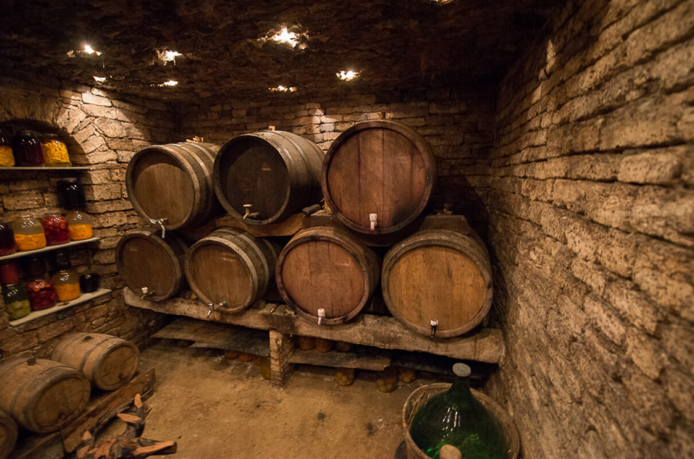
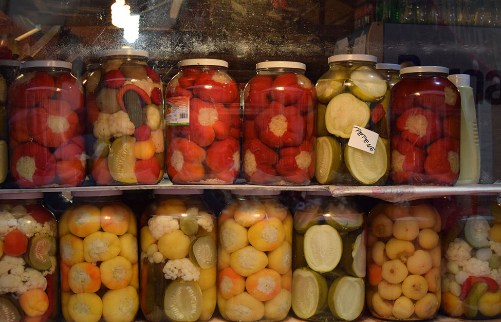

BECIUL MOLDOVNESC
La noi în țară, un gospodar nu e gospodar, dacă nu are un beci plin lângă casă. Acestea reprezintă locuri răcoroase, unde sunt depozitate borcane cu murături, zacuscă și butoaiele de vin.

